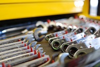

Welcome to DJ Cycles!
DJ Cycles is a new motorcycle shop in the South Bay. For the past 6 years, DJ has worked as a mechanic at Honda Peninsula Ducati Kawasaki KTM. He is both Honda and Ducati factory certified. DJ also worked as a mechanic for Grand Prix Kawasaki Suzuki Yamaha.
Needless to say, while DJ specializes in Japanese and Ducati motorcycles, he is able to work on everything. If it has two wheels and a motor, bring it by!
Because of the size of DJ's operation, he can be competitive on labor costs. You will receive the same quality of service as shops in the area, without the high prices.
DJ is an avid rider as well, and participates in many local rides. When he's not turning a wrench, you can usually find him either out on the trail, or enjoying some of the great South Bay roads that are right in his back yard.
Hope to see you soon!